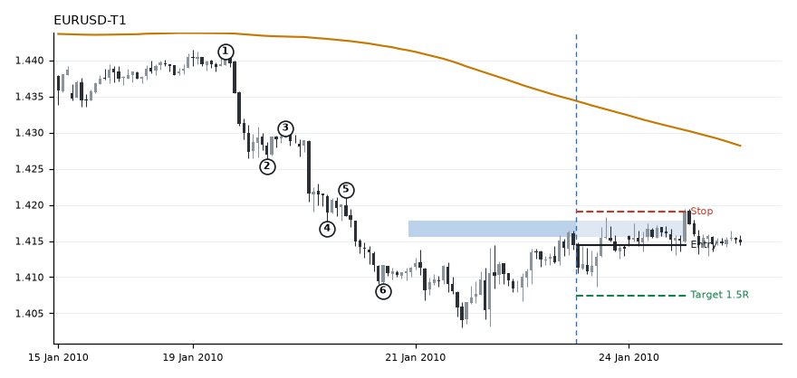
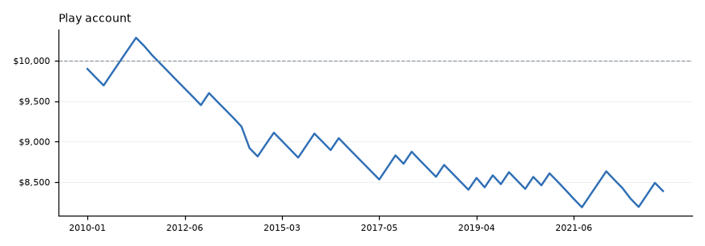

All tests · 2026-11-04 · 15 pairs, 2010 to Oct 2023
Failed Lost money.
Rules tested
- After a v3 structure, wait for price to pull back into high 4's zone (plus or minus 0.5 ATR).
- A down candle then an up candle closing at least half the down candle's body above its close.
- Enter at the next open, stop 1 ATR below high 4, target 1.5R.
- Also run with 25% and 100% (full engulfing) rejection.
Example

EURUSD-T1, 22 Jan 2010 11:00 UTC. Hit the stop: -1.02R after costs, -102 dollars at $100 risk.
Results
What it shows
- Worse than entering at confirmation.
- Worse than random entries, in every version.
Play account

$10,000 start, risking $100 a trade, in exit order across all pairs.
Chart library
Every trade, with its result. The blue band is the support zone. 72 charts. Click one to enlarge, then use the arrows or arrow keys to step through.